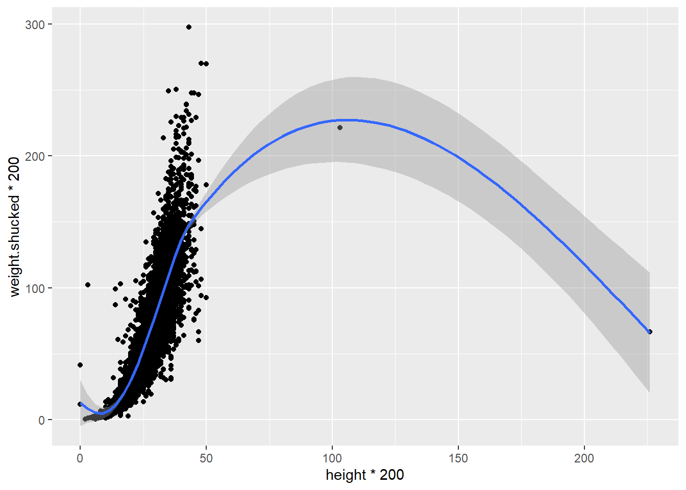
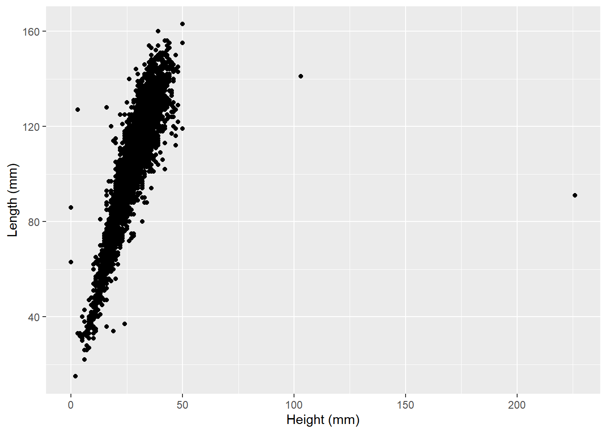
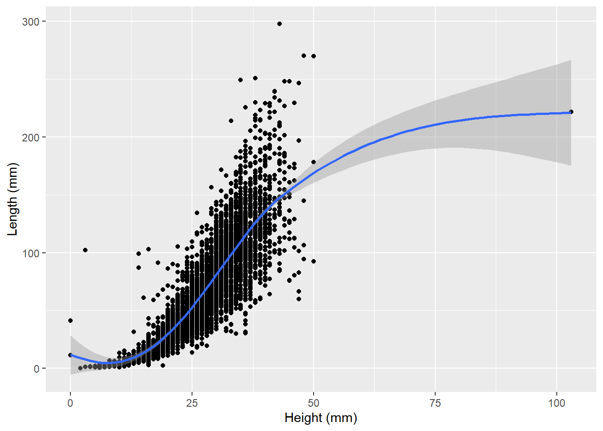

ggplot(data=Sacramento,aes(x=type,y=price)) +
geom_boxplot()
So far, most of the example data we have dealt have been selected because they fit the purpose of demonstrating a concept. But real data seldom comes without some kind of issue, problem, or weirdness. People constantly make data entry mistakes, data collection and storage protocols are rarely standardized, and data often include cases that, real or not, fly in the face of our expectations.
Conducting EDA means keeping a critical eye out for these kinds of things, and being able to make judgement calls about when a value is an appropriate outlier and when it is truly weird. In this section, we’ll look at how we deal with this.
As we mentioned in our discussion of visualizing categorical and numerical data using boxplots, outliers are indicated using points:
ggplot(data=Sacramento,aes(x=type,y=price)) +
geom_boxplot()
When we see these outliers, our first question should be: do these values make sense? Besides the house prices being shockingly out-of-date (the median house price in Sacamento is closer to $470,000 now), having home prices in the vicinity of $750,000 doesn’t seem wildly out of character. And if we do some digging on house prices, we know that house prices are often positively skewed, with some prices being substantially higher than the average:

So these outliers don’t seem super crazy and probably reflect what we would expect for this type of distribution. Let’s look at something a bit less reasonable:
ggplot(data=abalone,aes(x=height*200,y=weight.shucked*200)) +
geom_point() +
geom_smooth()`geom_smooth()` using method = 'gam' and formula = 'y ~ s(x, bs = "cs")'
Is it real? Does it make sense? How can we tell? To do this, we’ll have to think a little critically about what our data represent: the dimensions of shellfish. Abalone are bivalves that are shaped more or less like oblong discs, so their height isn’t typyically greater than their length. We can plot height by length to see if this is generally true for our data:
ggplot(data=abalone,aes(x=height*200,y=length*200)) +
geom_point()
We can see most of our data falls on the left and are our outliers on the right hand side. For the tallest one, which has a height somewhere around 225 mm, it is only showing a length of around 90 mm. This means that this abalone is taller than it is wide, which would make for a very strange looking shellfish.
What might explain this? It seems possible that the person recording the data made a mistake. Looking at the data, we can see that most other abalones recorded in this dataset with a length of around 90 mm have a height of about 25 mm. It’s entirely possible that whoever entered this data added an extra 2 when typing it in.
Unfortunately, it’s not good practice to second-guess what someone meant to enter. It could have been 25, or 22, or something else that they meant to type all together. So rather than change the data to a value with think is correct, the safer thing to do is to eliminate that observation. We can use the square brackets to do this:
abalone2<-abalone[abalone$height*200<150,]
ggplot(data=abalone2,aes(x=height*200,y=weight.shucked*200)) +
geom_point() +
geom_smooth()`geom_smooth()` using method = 'gam' and formula = 'y ~ s(x, bs = "cs")'However, when you start removing data it is EXTREMELY important that you document that you are doing so, and explain why. Comments in your script are a good place to do this.
#Removing outlier due to suspect height value (too high for length)
abalone2<-abalone[abalone$height*200<150,]
ggplot(data=abalone2,aes(x=height,y=weight.shucked)) +
geom_point() +
geom_smooth()`geom_smooth()` using method = 'gam' and formula = 'y ~ s(x, bs = "cs")'
Take a good look at that other outlier in the heights (on the far right of the last plot). Does it make sense? Why or why not?